!pokeballs NOME DO POKEMON
Informa quantas pokebolas foram gastas no pokemon.
Guias objetivos, ferramentas e referências para consultar enquanto você joga PStory.
Escolha uma área para começar.
Recomendações, rotas e planejamento.
Progressão, semanais e sistemas de missão.
Captura, composição e atividades do jogo.
Dados rápidos para decisões durante o jogo.
Vídeos e transmissões da comunidade.
Hub da comunidade
Guias, quests e ferramentas em uma entrada direta para jogar sem ficar pulando entre abas soltas.
Entre por Bosses, Quests, Sistemas, Utilidades e Comunidade para acessar Rotom Phone, Police Operation, Slowpoke Well, hunts, times, captura, streamers e vídeos.
 Amber
Amber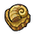
Helix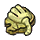
Root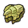
Claw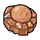
Skull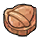
Armor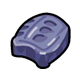
Cover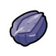
Plume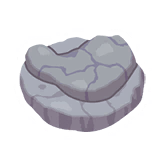
Jaw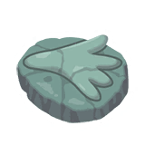
SailConsulte as trocas com os Maniacs, os materiais necessários e onde encontrá-los.
Localização dos Maniacs por Hunt da Expedição. Esses Maniacs precisam de 100 Ace Essence para realizar a troca.
Guia rápido com o boss, a localização no mapa e a stone principal usada na entrada.
Clique na imagem do local para abrir o mapa com zoom.
Calculadora de Treino
Escolha o Pokemon, confirme o level atual e selecione se o treino sera Normal ou Shiny para calcular Coins, Plates e materiais.
Busque no catalogo para carregar tipo, imagem e level inicial.
O level do Pokemon e pre-selecionado, mas pode ser ajustado.
Shiny adiciona Shining Plates junto das Plates normais.
Shining Plates são produzidas em blocos de 30. 1 plate comum precisa de 750 itens do elemento, 24 itens característicos e 1 pedra do elemento.
Utilidades
Escolha o alvo e veja os materiais.
Selecione um resultado para liberar o calculo.
Apenas o craft do nivel escolhido.
Soma de todos os boosts ate o nivel escolhido.
Boost Bronze e Silver mostram custo direto. O craft das Stars aparece separado.
Utilidades
Cards com leitura rápida de moveset, elementos naturais, time e médias de captura.
Combine nome, role, clã, nível, geração, tags, tipos e moveset para refinar os cards sem sair da página.
Carregando catálogo...
Pagina 1 de 1
Pagina 1 de 1
Utilidades
Consulte composições por clã, elemento e Pokémons.
Pesquise por clã, elemento, tag, Pokémon ou hunt. Exemplos: frontal, mystic ou instinct, dragon.
Carregando times...
Tente ajustar o clã ativo ou os termos da busca.
Arraste DPS e Finisher preenchidos para trocar as posições entre eles.
Carregando catálogo...
As hunts são apenas recomendações automaticas com base na sua composição, tenha certeza de checar antes de fazer algo.
Escolha a hunt, filtre o time pelo clã e selecione os tipos vantajosos.
As opções abaixo são as fraquezas da hunt selecionada.
Roteiro de tasks usado como base de progresso em Kanto. A região tem 10 cidades, 151 tasks e serve como preparação para liberar a Liga Pokémon.
O foco aqui é a aba Kanto: cidades, volume de tasks e o que você vai resolver em cada uma. Johto e Orre aparecem como futuras regiões na fonte, mas ainda não são o ponto útil do guia.
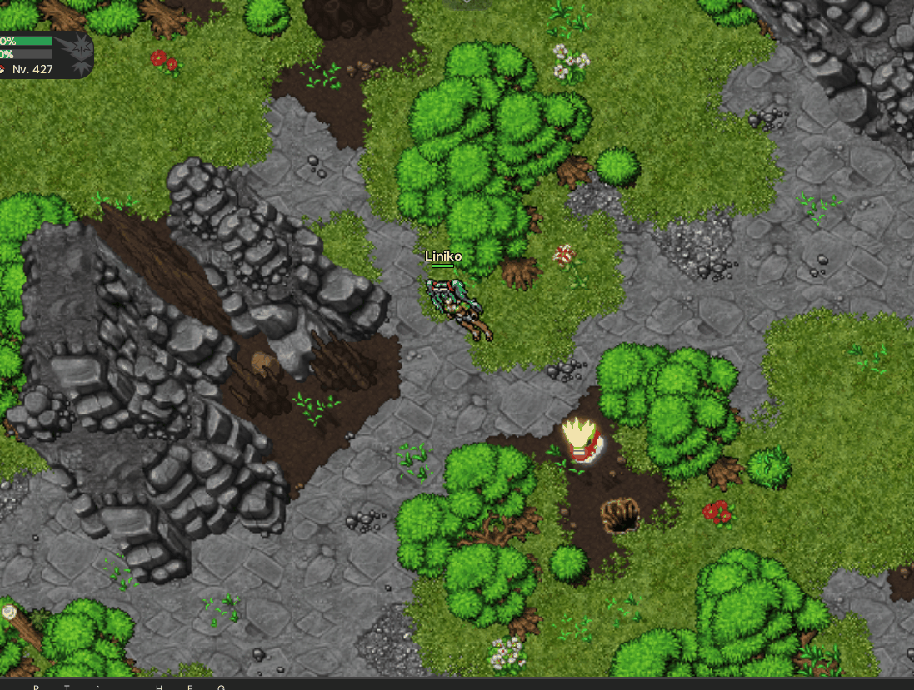
Clique em uma cidade para abrir as tasks. Cada missão pode ser marcada como concluída e fica salva neste navegador.
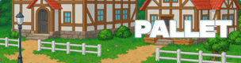
Cidade de Pallet 19 tasks 19 restantes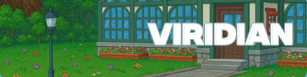
Cidade de Viridian 16 tasks 16 restantes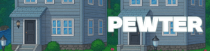
Cidade de Pewter 14 tasks 14 restantes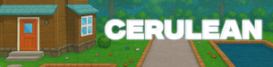
Cidade de Cerulean 16 tasks 16 restantes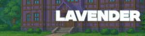
Cidade de Lavender 15 tasks 15 restantes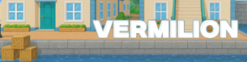
Cidade de Vermilion 14 tasks 14 restantes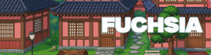
Cidade de Fuchsia 13 tasks 13 restantes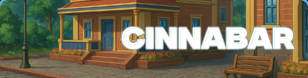
Ilha de Cinnabar 15 tasks 15 restantesInvestigação semanal da Officer Jenny contra a Equipe Rocket. Use o Poké Phone, encontre os Rockets indicados, confirme cada operação e junte tokens para trocar por Held Items.
A quest começa no Police HQ, a oeste de Viridian, falando com a Officer Jenny.
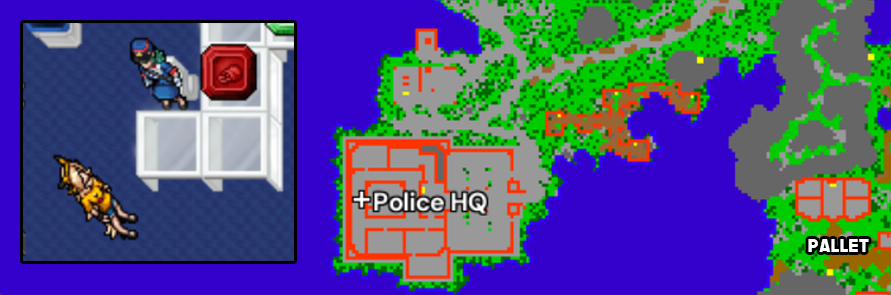
No Police HQ, ela libera o Poké Phone. Esse item concentra as investigações contra a Equipe Rocket e mostra quais pistas você deve seguir.
Cada cidade pode oferecer até 10 investigações. Aceite uma pista, procure o Rocket indicado no mapa e derrote-o.
Depois da luta, abra o Poké Phone novamente e conclua a investigação. A derrota só entra na progressão semanal quando essa confirmação é feita.
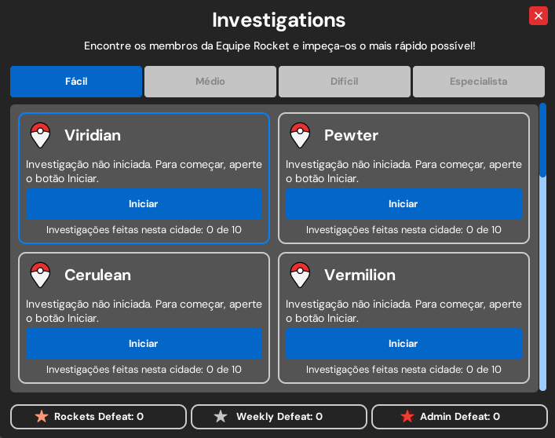
Reporte para a Officer Jenny ao concluir.
1.000.000 EXP + 2x Held Ticket T3Segunda faixa da operação semanal.
2.500.000 EXP + 1x Held Ticket T3 + 1x Held Ticket T4Etapa avançada antes da escala Expert.
5.000.000 EXP + 3x Held Ticket T5Recompensas recorrentes a cada 500 Rockets derrotados.
5.000.000 EXP + Held Ticket T6 ou T7 conforme o marcoRocket ADMIN é um inimigo raro de alta patente que pode aparecer depois de derrotar membros do nível Expert.
| Dificuldade | Mighty Token | Devoted Token |
|---|---|---|
| Easy | 3 | 1 |
| Medium | 5 | 1 |
| Hard | 9 | 2 |
| Expert | 15 | 3 |
| ADMIN | 300 | - |
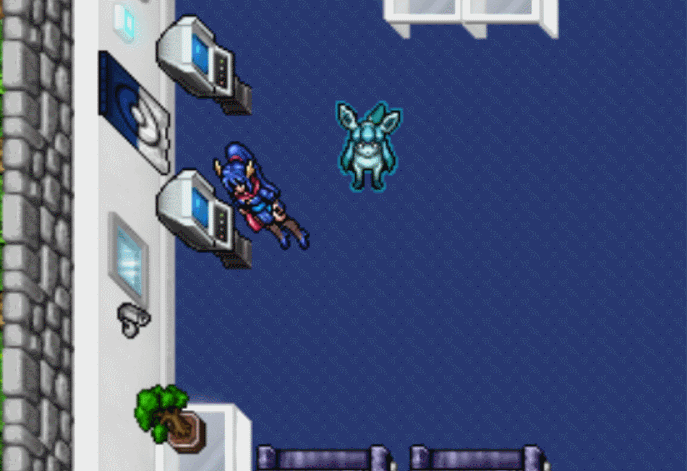
Guia direto da quest semanal que libera o caminho para as Expedições: fale com os NPCs certos, entre no poço, limpe a dungeon e confira as recompensas no final.
O tempo de espera conta a partir da conclusão da quest. Ele não depende do reset semanal de domingo.
Comece pela Police HQ e fale com Looker. O objetivo aqui é só abrir a linha da quest e receber o direcionamento para Azalea.
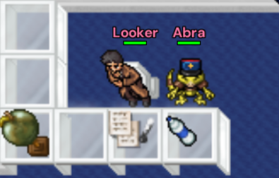
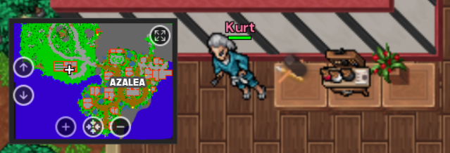
Fale com Kurt na casa dele. Depois disso, siga para o poço; ele funciona como a ponte entre a investigação e a dungeon.
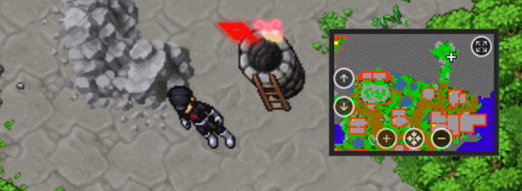
Derrote Team Rocket Marcus antes de entrar. Com a passagem liberada, a quest muda para limpeza interna.
Vasculhe os andares, derrote os Rockets que encontrar e confirme que todos os Slowpokes foram libertados. A quest só fecha quando a limpeza estiver completa.
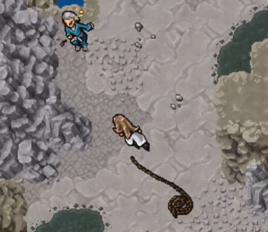

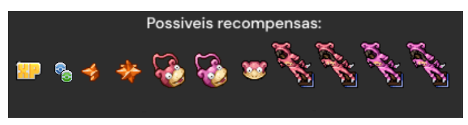
A cada conclusão você recebe 10 pontos para trocar com Maizie, neta do Kurt, dentro da casa dele. Nas três primeiras conclusões, a quest também entrega uma Golden Apricorn.
Leve a Golden Apricorn ao Kurt para receber um Timer Ball: Upgrade. Esse upgrade permite que o Pokémon recarregue skills dentro da Ball no mesmo ritmo em que recarregaria fora dela.
Ao aplicar a Timer Ball, o Pokémon fica UNIQUE. A remoção pode ser feita no TC com a NPC Chester, na área das Expedições.
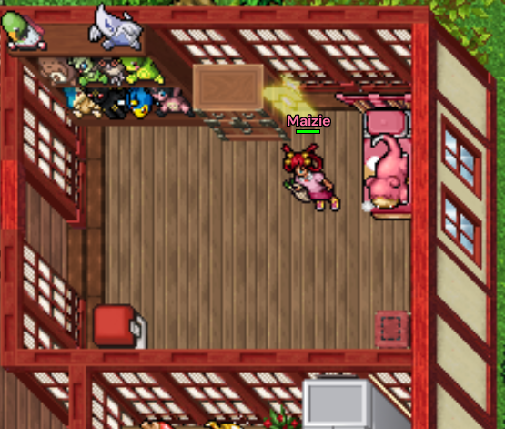
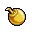
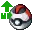
Aprimore Helds Primários sacrificando itens do mesmo tier. A chance muda em tempo real conforme você adiciona materiais e Moedas Especiais.
Monte a tentativa com held principal, tier, materiais de descarte e Moeda Especial para ver custo, chance, preview e um resultado simulado.
Fusion cost: $0
Chance: 0%
Moedas: 0
Bônus: -
Swift Feather e Eject Button ficam fora: não podem ser aprimorados nem usados como descarte por serem helds secundários.
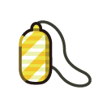
Amulet Coin Possui regra especial.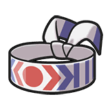
Choice Band Held primário.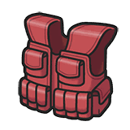
Assault Vest Held primário.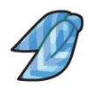
Choice Scarf Held primário.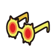
Choice Specs Held primário.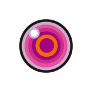
Life Orb Held primário.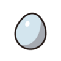
Lucky Egg Held primário.
Escolha o held principal no simulador para conferir o próximo tier, o custo e o efeito antes da tentativa.
Insira 1 ou 2 helds de descarte do mesmo tier do item principal. Quanto mais materiais, maior a chance final.
A Moeda Especial adiciona o bônus extra da tabela. A chance de sucesso é atualizada em tempo real.
Se falhar, o held principal continua com você no mesmo tier. A taxa em dinheiro e os helds de descarte sempre são consumidos.
Cada held de descarte adiciona a chance base indicada. Com dois materiais, some a chance de ambos antes de aplicar o bônus da Moeda Especial.
| Evolução de tier | Custo da tentativa | Chance base por held | Bônus da moeda | Moedas necessárias |
|---|---|---|---|---|
| T1 → T2 | 10.000 (10K) | +5% | +90% | 1 Moeda |
| T2 → T3 | 25.000 (25K) | +8% | +84% | 2 Moedas |
| T3 → T4 | 50.000 (50K) | +10% | +80% | 3 Moedas |
| T4 → T5 | 200.000 (200K) | +15% | +70% | 9 Moedas |
| T5 → T6 | 500.000 (500K) | +25% | +50% | 45 Moedas |
| T6 → T7 | 1.000.000 (1KK) | +30% | +40% | 90 Moedas |
Ao aprimorar Amulet Coin, a regra vale em todos os tiers, de T1 → T2 até T6 → T7: somente outro Amulet Coin pode ser usado como material de fusão.
Escolha uma profissão para abrir o guia completo.
Profissão focada em cosméticos, Pokéblocks, outfits, addons, depots estilizados e Silver Star Sketch.
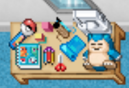
Se perder o Workshop para comprar outro, o custo informado é de 2kk.
Cinza equivale a 100% de points
azul equivale a 200% de points.
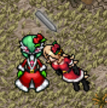
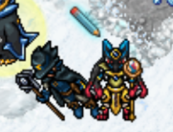
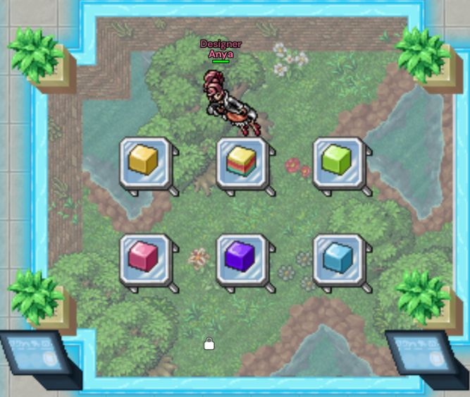
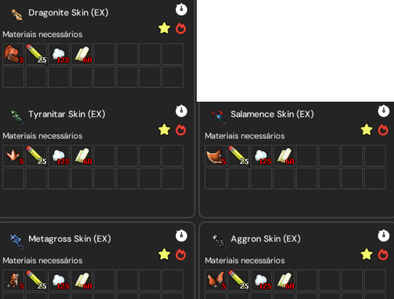
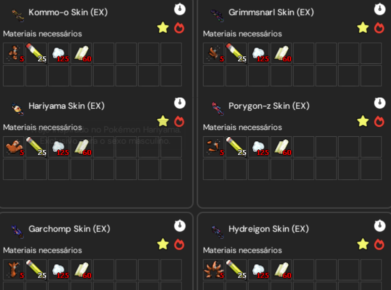
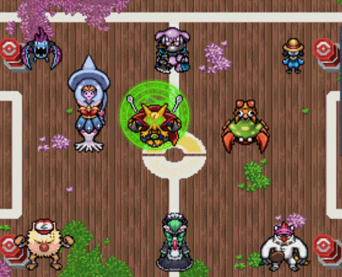
Pokéblocks são consumíveis que concedem imunidade temporária a status negativos.
Profissão focada em suporte de batalha, Poképedias, berries, cultivo e Rations defensivas.
Se perder o Workshop para comprar outro, o custo informado é de 2kk.
Cinza equivale a 100% de points
azul equivale a 200% de points.
Rations são consumíveis de suporte que aumentam a defesa contra elementos específicos por um bom tempo. Também existem opções voltadas a dano neutro.
O ciclo de berries começa com a Berry Pouch, que permite coletar sementes em árvores. Depois, o Breeder usa vasos, rega a planta e pode aplicar fertilizantes para reduzir o tempo de produção.
Profissão focada em Battle Items, upgrades de câmera, Adventure Tickets e coleta de Orbs em dungeons.
Se perder o Workshop para comprar outro, o custo informado é de 2kk.
Cinza equivale a 100% de points
azul equivale a 200% de points.
Battle Items são consumíveis de curta duração que entregam buffs poderosos ao Pokémon.
Adventure Ticket permite que o Photographer entre em dungeons para coletar Orbs, usados em diversos crafts da profissão.
Profissão focada em Vitamins, Pokéballs especiais, machines compactas e materiais para Silver Star.
Se perder o Workshop para comprar outro, o custo informado é de 2kk.
Cinza equivale a 100% de points
azul equivale a 200% de points.
Vitamins são consumíveis que concedem pequenos buffs por um longo período.
Calculadora de captura com estimativa por alvo, variante e pokebola.

Escolha o alvo e a variante para liberar a estimativa.
Nota: os valores são uma média aproximada; geralmente gastam-se algumas pokébolas a mais.
Cole o retorno do comando no jogo para converter o gasto e ver quanto ainda falta.
Acompanhe o status dos canais da comunidade e abra a transmissão no Twitch.
Comunidade no YouTube
Veja os uploads mais recentes da comunidade.
Lista cronológica, sem ranking.
Produz conteúdo de PStory? Use #pstory e, se quiser, uma hashtag de tema para aparecer no filtro certo.
Escolha um vídeo da lista ou clique na capa para carregar o player aqui sem sair da aba.
Explore andares, locais, serviços, hunts e áreas de respawn do PStory.


Observacao